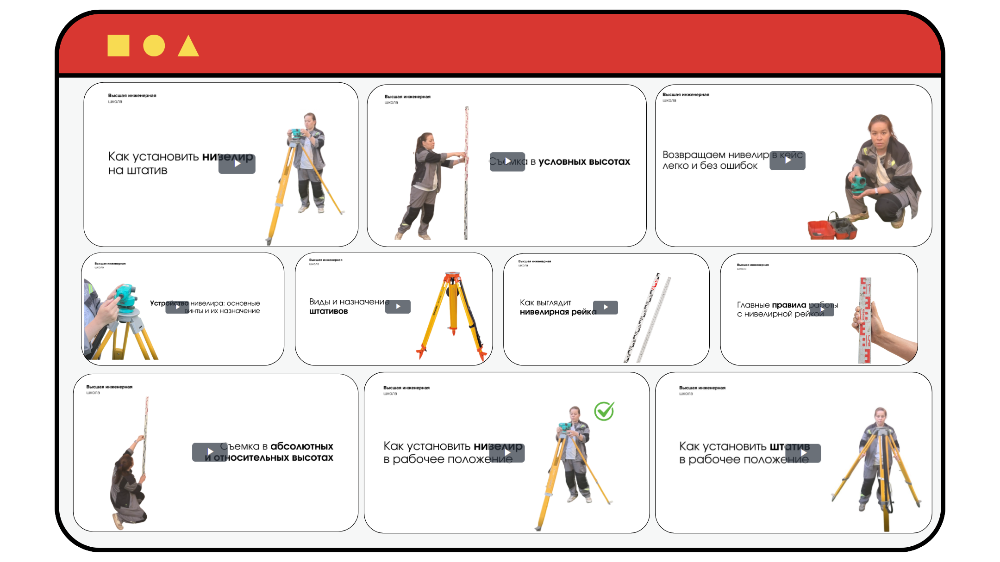
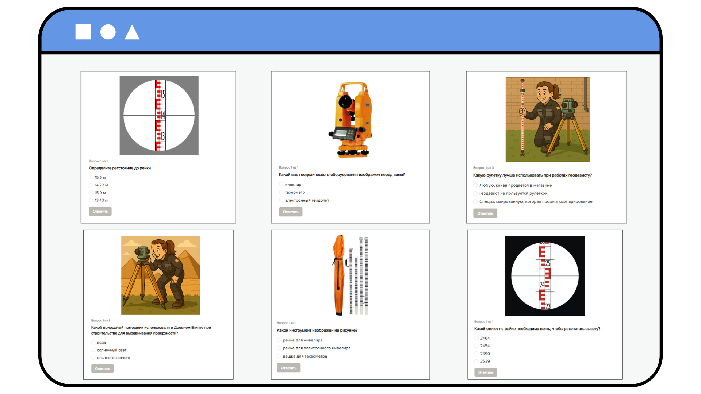

О курсе: чему вы научитесь и как это пригодится на практике
Андрей, добро пожаловать на авторский курс повышения квалификации «Геодезия в строительстве: практические навыки для начинающих». На строительных объектах мы часто слышим слова «геодезист», «геодез», «геодезические схемы», «разбей точку», но не понимаем, кто этот таинственный человек? Самое время приоткрыть завесу тайны и освоить новые востребованные навыки, а вместе с ними получить удостоверение о повышении квалификации!

После обучения и успешного прохождения финального теста у вас сформируются базовые навыки инженера-геодезиста и обновится персональный паспорт профессиональных навыков
Чему вы научитесь на курсе
На курсе вы освоите все то, с чего следует начать работу геодезисту на строительном объекте. А именно:
- Познакомитесь с основными инструментами и оборудованием геодезиста, освоите их правильную установку.
- Изучите работу самого простого, но незаменимого даже в обычной жизни прибора – нивелира: легко и без ошибок научитесь считать высоту и вычислять с его помощью расстояние.
- Научитесь переносить высотные отметки на самый верх сооружений, поймете разницу абсолютных и относительных отметок, а также рассчитаете высоту от репера.
- Освоите самые распространенные геодезические схемы и чертежи, а также их наполнение.
- Потренируетесь считать объемы разработки грунта самым точным способом, а также составите план земляных масс.
Об авторе курса
Автор курса – Вера Сафуанова – опытный инженер-строитель с десятилетним стажем работы в геодезии. Под ее руководством были построены и введены в эксплуатацию известные строительные объекты.
Меня зовут Вера Сафуанова, я – действующий эксперт строительного контроля. За моими плечами десять лет трудового стажа в геодезии. За это время я успела посмотреть на строительство с разных сторон, совмещая должность инженера-геодезиста с руководством ПТО на крупных строительных объектах. Вот лишь некоторые примеры моих проектов:
Я разработала этот курс, потому что на собственном опыте убедилась: инженеру ПТО, начинающему геодезисту и любому специалисту в строительстве крайне важно владеть базовыми геодезическими навыками. Этому не научат в других образовательных учреждениях. На моем курсе вы получите только практические навыки и увидите реальные примеры из повседневной работы геодезиста. А еще я поделюсь с вами геодезическими секретами и лайфхаками, которых нет на просторах интернета.
Как я буду вас учить
Наверняка вы согласитесь со мной, что внешне геодезисты схожи с видеооператорами. Во-первых, они тоже работают с приборами, которые напоминают камеры на штативах. Во-вторых, схожа и манера работы: геодезист долго и внимательно смотрит в окуляр или на дисплей прибора, наводит его на объект, фиксирует положение — как и оператор, снимающий сцену.
Поэтому я решила построить курс так, как строится структура любого фильма, где «завязкой» выступит постепенное знакомство с геодезическим оборудованием и его применение в работе, а «кульминацией (развязкой)» — самостоятельное составление и расчет плана земляных масс. Всему этому вы научитесь с помощью моих видео «с полей», а также авторских скринкастов по работе в AutoCad.

Я построила уроки по принципу «Посмотри и повтори», поэтому после обучающего материала вы будете тренироваться применять полученные знания на практике. Обязательно выполняйте упражнения — они максимально приближены к рабочим ситуациям. А еще тренажеры помогут вам сдать итоговый тест с первого раза.

Давайте прямо сейчас потренируемся с пользой.
Первая сложность, с которой сталкиваются начинающие геодезисты — профессиональный сленг. Этому не учат в университетах и колледжах, а понимать опытных коллег нужно уже сегодня (тем более, что в среде геодезистов такая манера общения пользуется уважением и признанием мастерства). Ниже я подготовила для вас несколько карточек с основными фразами геодезистов, чтобы вы уже сейчас заполнили этот пробел.
Потренируйтесь в интерактивном тренажере ниже и получите свой первый геодезический навык
Прежде чем нажать на кнопку «Смотреть ответ», попробуйте мысленно определить значение сленга.
Это была первая часть профессионального сленга. У меня в запасе еще много фраз, которые используют опытные геодезисты. Хотите понимать их «с полуслова» и стать частью геодезического профсообщества? Это очень просто! Если вы пройдете все мои уроки, то в конце обучения без труда выполните задание и определите значение сленга геодезистов. А самые усидчивые получат от меня бонус – видео о камеральной обработке настоящей геодезической съемки с использованием слоев в AutoCad.
Обработка результатов – это 50% работы геодезиста, поэтому у вас есть уникальная возможность получить новую профессию
Скорее переходите к обучению и приобретайте новые профессиональные навыки в области геодезии. Желаю успехов!